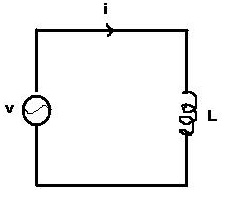

Let us consider a pure inductor circuit whose inductance is L Henry. It is supplied with an alternating voltage of v volts. The instantaneous current in the circuit is denoted by i and is measured in ampere. In this circuit a voltage e is induced into the coil. We can find out inductive reactance of this circuit. Basically the opposition to the change of current in an inductive element is called as inductive reactance.

Instantaneous current i = Im sin ωt
Induced voltage e = L di/dt
= L d/dt (Im sin ωt ) = ωL Imcosωt
= Vm cosωt where Vm is the peak value of induced voltage
Therefore e = Vm sin (ωt + 90) ………………… (i)
Equation (i) gives us two informations that is :
Peak value of induced voltage Vm is equal to ωL Im. The relation in case of rms value is given by Vrms = ωL Irms. Then ωL = XL. XL is called the inductive reactance and it is measured in ohms. So it is seen that inductive reactance is related to the signal frequency f and inductance L. Current through inductor lags voltage across the inductor by 90°.
 by
by